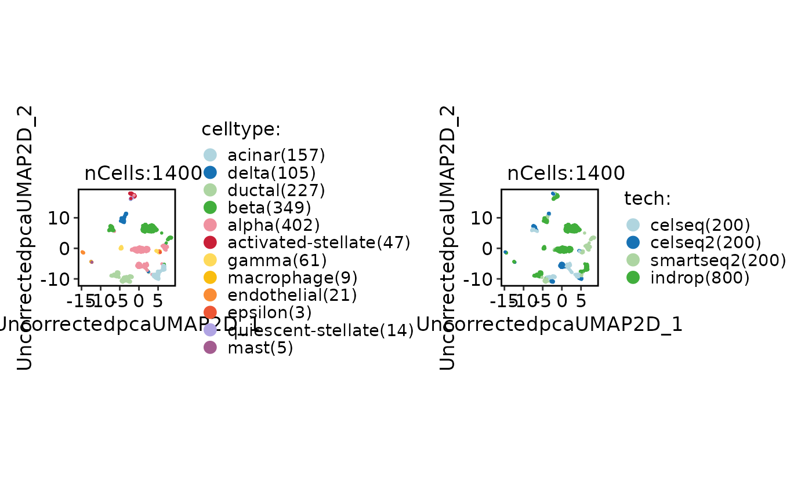
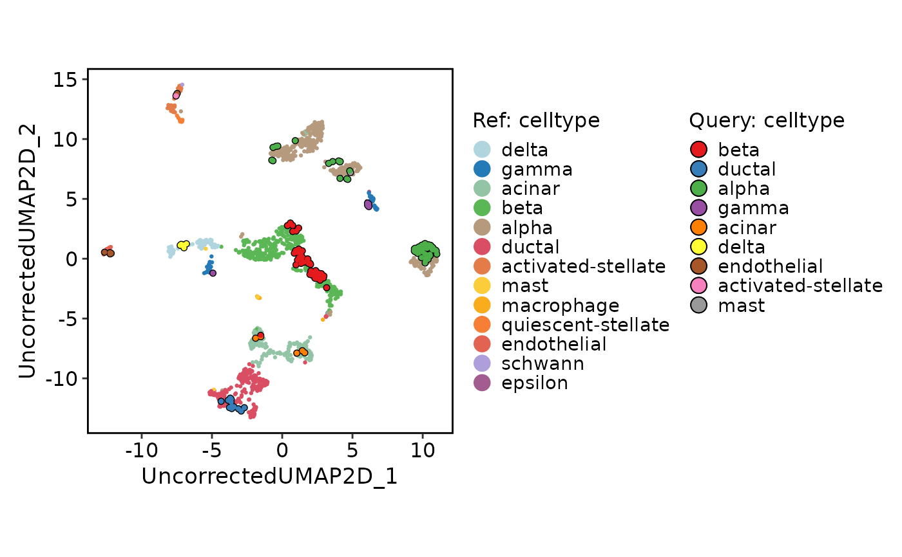

This function generates a projection plot, which can be used to compare two groups of cells in a dimensionality reduction space.
Usage
ProjectionPlot(
srt_query,
srt_ref,
query_group = NULL,
ref_group = NULL,
query_reduction = "ref.embeddings",
ref_reduction = srt_query[[query_reduction]]@misc[["reduction.model"]] %||% NULL,
query_param = list(palette = "Set1", cells.highlight = TRUE),
ref_param = list(palette = "Chinese"),
xlim = NULL,
ylim = NULL,
pt.size = 0.8,
stroke.highlight = 0.5
)Arguments
- srt_query
An object of class Seurat to be annotated with cell types.
- srt_ref
A Seurat object or count matrix representing the reference object. If provided, the similarities will be calculated between cells from the query and reference objects. If not provided, the similarities will be calculated within the query object.
- query_group
The grouping variable for the query group cells.
- ref_group
The grouping variable for the reference group cells.
- query_reduction
The name of the reduction in the query group cells.
- ref_reduction
The name of the reduction in the reference group cells.
- query_param
A list of parameters for customizing the query group plot. Available parameters: palette (color palette for groups) and cells.highlight (whether to highlight cells).
- ref_param
A list of parameters for customizing the reference group plot. Available parameters: palette (color palette for groups) and cells.highlight (whether to highlight cells).
- xlim
The x-axis limits for the plot. If not provided, the limits will be calculated based on the data.
- ylim
The y-axis limits for the plot. If not provided, the limits will be calculated based on the data.
- pt.size
The size of the points in the plot.
- stroke.highlight
The size of the stroke highlight for cells.
Examples
data(panc8_sub)
panc8_sub <- standard_scop(panc8_sub)
#> ℹ [2026-05-25 10:21:22] Start standard processing workflow...
#> ℹ [2026-05-25 10:21:23] Checking a list of <Seurat>...
#> ! [2026-05-25 10:21:23] Data 1/1 of the `srt_list` is "unknown"
#> ℹ [2026-05-25 10:21:23] Perform `NormalizeData()` with `normalization.method = 'LogNormalize'` on 1/1 of `srt_list`...
#> ℹ [2026-05-25 10:21:24] Perform `Seurat::FindVariableFeatures()` on 1/1 of `srt_list`...
#> ℹ [2026-05-25 10:21:25] Use the separate HVF from `srt_list`
#> ℹ [2026-05-25 10:21:25] Number of available HVF: 2000
#> ℹ [2026-05-25 10:21:25] Finished check
#> ℹ [2026-05-25 10:21:25] Perform `Seurat::ScaleData()`
#> ℹ [2026-05-25 10:21:25] Perform pca linear dimension reduction
#> ℹ [2026-05-25 10:21:26] Use stored estimated dimensions 1:27 for Standardpca
#> ℹ [2026-05-25 10:21:26] Perform `Seurat::FindClusters()` with `cluster_algorithm = 'louvain'` and `cluster_resolution = 0.6`
#> ℹ [2026-05-25 10:21:26] Reorder clusters...
#> ℹ [2026-05-25 10:21:27] Skip `log1p()` because `layer = data` is not "counts"
#> ℹ [2026-05-25 10:21:27] Perform umap nonlinear dimension reduction
#> ℹ [2026-05-25 10:21:27] Perform umap nonlinear dimension reduction using Standardpca (1:27)
#> ℹ [2026-05-25 10:21:32] Perform umap nonlinear dimension reduction using Standardpca (1:27)
#> ✔ [2026-05-25 10:21:36] Standard processing workflow completed
srt_ref <- panc8_sub[, panc8_sub$tech != "fluidigmc1"]
srt_query <- panc8_sub[, panc8_sub$tech == "fluidigmc1"]
srt_ref <- integration_scop(
srt_ref,
batch = "tech",
integration_method = "Uncorrected"
)
#> ◌ [2026-05-25 10:21:37] Run integration workflow...
#> ℹ [2026-05-25 10:21:37] Split `srt_merge` into `srt_list` by "tech"
#> ℹ [2026-05-25 10:21:38] Checking a list of <Seurat>...
#> ℹ [2026-05-25 10:21:38] Data 1/4 of the `srt_list` has been log-normalized
#> ℹ [2026-05-25 10:21:38] Perform `Seurat::FindVariableFeatures()` on 1/4 of `srt_list`...
#> ℹ [2026-05-25 10:21:39] Data 2/4 of the `srt_list` has been log-normalized
#> ℹ [2026-05-25 10:21:39] Perform `Seurat::FindVariableFeatures()` on 2/4 of `srt_list`...
#> ℹ [2026-05-25 10:21:39] Data 3/4 of the `srt_list` has been log-normalized
#> ℹ [2026-05-25 10:21:39] Perform `Seurat::FindVariableFeatures()` on 3/4 of `srt_list`...
#> ℹ [2026-05-25 10:21:40] Data 4/4 of the `srt_list` has been log-normalized
#> ℹ [2026-05-25 10:21:40] Perform `Seurat::FindVariableFeatures()` on 4/4 of `srt_list`...
#> ℹ [2026-05-25 10:21:40] Use the separate HVF from `srt_list`
#> ℹ [2026-05-25 10:21:41] Number of available HVF: 2000
#> ℹ [2026-05-25 10:21:41] Finished check
#> ℹ [2026-05-25 10:21:43] Perform Uncorrected integration
#> ℹ [2026-05-25 10:21:44] Perform `Seurat::ScaleData()`
#> ℹ [2026-05-25 10:21:44] Perform "pca" linear dimension reduction
#> ℹ [2026-05-25 10:21:45] Adjust neighbor k from 20 to 20 for small-sample clustering
#> ℹ [2026-05-25 10:21:45] Perform `Seurat::FindClusters()` with "louvain"
#> ℹ [2026-05-25 10:21:45] Reorder clusters...
#> ℹ [2026-05-25 10:21:46] Skip `log1p()` because `layer = data` is not "counts"
#> ℹ [2026-05-25 10:21:46] Perform umap nonlinear dimension reduction using Uncorrectedpca (1:19)
#> ℹ [2026-05-25 10:21:51] Perform umap nonlinear dimension reduction using Uncorrectedpca (1:19)
#> ℹ [2026-05-25 10:21:55] Perform umap nonlinear dimension reduction using Standardpca (1:27)
#> Warning: Key ‘StandardpcaUMAP2D_’ taken, using ‘standardpcaumap2d_’ instead
#> ✔ [2026-05-25 10:22:02] Uncorrected integration completed
CellDimPlot(
srt_ref,
group.by = c("celltype", "tech")
)

# Projection
srt_query <- RunKNNMap(
srt_query = srt_query,
srt_ref = srt_ref,
ref_umap = "UncorrectedUMAP2D"
)
#> ℹ [2026-05-25 10:22:02] Use the features to calculate distance metric
#> ℹ [2026-05-25 10:22:02] Data type is log-normalized
#> ℹ [2026-05-25 10:22:04] Data type is log-normalized
#> ℹ [2026-05-25 10:22:04] Use 636 features to calculate distance
#> ℹ [2026-05-25 10:22:05] Use cpp method to find neighbors
#> ℹ [2026-05-25 10:22:05] Running UMAP projection
ProjectionPlot(
srt_query = srt_query,
srt_ref = srt_ref,
query_group = "celltype",
ref_group = "celltype"
)
#> Scale for x is already present.
#> Adding another scale for x, which will replace the existing scale.
#> Scale for y is already present.
#> Adding another scale for y, which will replace the existing scale.
